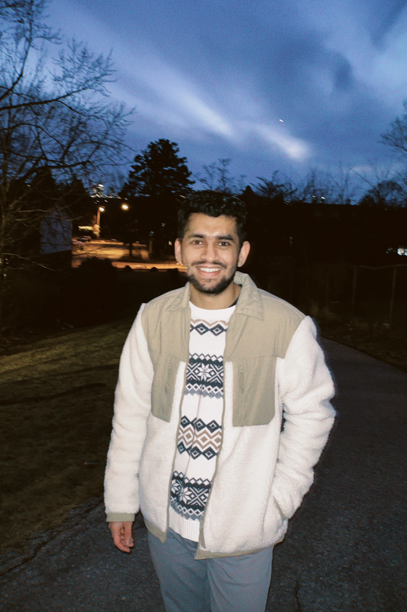

Milbir Guram
I’m quiet by nature, introspective, and curious.
I’m a Senior Data Engineer at Tru Bank. Previously, I worked as a Data Engineer at LlamaZOO. I completed my master’s in Computer Science at Simon Fraser University.
On the side, I’m building two passion projects: Bonsai, an ideas search engine, and Twin, a new way of looking at code analytics.
I’m always up for a conversation about tactics in football, beauty in films, and the algorithms I’m exploring in financial markets.
I like to read things too. These are some of my favourite poems and favourite essays.
Find my photos on VSCO, connect on LinkedIn, or email me at milbirguram@gmail.com.